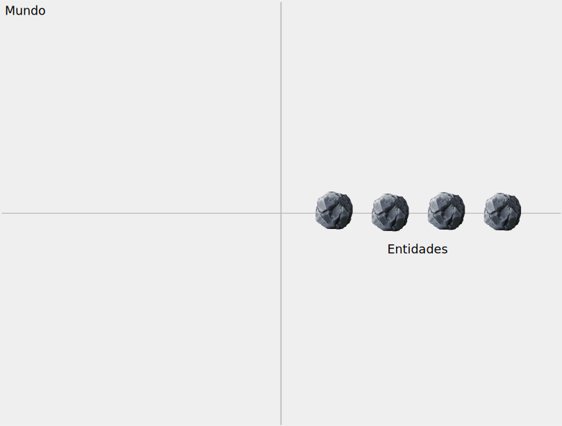

GameObject
GameObject
es la entidad básica de Phaser.
Tienen una referencia a la escena a la que pertenece (scene)
Tienen un método para activar/desactivar los gameobject
(setActive(value))
Tienen métodos para suscribirnos (on()) y desengancharnos de eventos
(off())
Pueden convertirse en objetos interactuables (setInteractive(value))
(… y otros muchos métodos)
No crearemos objetos de este tipo pero muchas de las entidades de Phaser
heredan de
GameObject
A continuación veremos algunas de las entidades más importantes de Phaser
Image
Las imágenes son las entidades visibles más simples de Phaser. Las
entidades son instancias de la clase
Image
Su simplicidad las hace ligeras y eficientes en términos de memoria
Utilizamos imágenes cuando no necesitamos comportamientos complejos como físicas o animaciones por keyframes
Aun así, las imágenes se pueden mover, rotar, escalar, invertir (flip) o recortar
Esto las hace ideales para, por ejemplo, logos, imágenes de fondo, barras de carga, elementos de interfaz…
Una imagen se crea a través del método factoría
add.image
del objeto Scene
Por ejemplo, como parte de la creación de una escena en el método
create
En Phaser, el origen de coordenadas (0,0) está en la esquina superior izquierda
Las imágenes tienen por defecto el punto de origen (o pivote) en el centro de la imagen
Las imágenes renderizan texturas de acuerdo a su posición (x,y) y pivote.
Podemos cambiar su posición con
setPosition
Podemos cambiar el pivote de la imagen con
setOrigin
(en [0,1])
También se puede elegir el blending con blendMode
Se puede cambiar su transparencia con alpha
Se puede cambiar su profundidad o z-index con depth
(¡mirad el API!)
Una imagen puede ser "recortada" con setCrop, de forma que sólo se vea
un trozo de la misma
// this es una Scene
this.image = this.add.image(0, 0, 'phaser');
this.image.setCrop(0, 0, 10, 10);
Cuando la imagen se recorta, realmente no se pierde información
De hecho, el recorte se puede cambiar dinámicamente:
// this es una Scene
function update() {
this.v += 0.1;
this.image.setCrop(0, 0, this.v, this.v);
}
setFlip, setFlipX,
Set FlipYsetDepth(Nuevamente, mirad la API)
Scene)
Podemos crear nuestras propias escenas heredando de la clase
Scene:
export default class Menu extends Phaser.Scene {
constructor() {
// Nombre de la escena para el SceneManager
super({ key: 'menu-principal' });
}
// Métodos init, preload, create, update
}
En Phaser, la factoría de objetos se llama añadir (add) por una razón:
porque añadimos las nuevas entidades a la escena
Para Phaser, la escena, representado por la clase
Scene, es la
abstracción del lugar (un plano bidimensional) donde habitan las
entidades

Figura 1: La escena, la cámara y entidades más allá de los límites de la cámara
Miramos al mundo a través de cámaras
Figura 2: El mundo, la cámara y entidades más allá de los límites de la cámara
Al iniciar, se crea una cámara, a la que podemos acceder a través del atributo
cameras.main de la escena:
// en el método create, donde this es una Scene
let card = this.add.sprite(200, 200, 'card');
this.cameras.main.startFollow(card);
Podemos cambiar el viewport de la cámara con setViewport:
// this es una Scene
this.cameras.main.setViewport(200, 150, 400, 300);
Las cámaras tienen otros muchos métodos y funciones que se pueden consultar en su API.
Para cambiar entre escenas utilizamos el
SceneManager,
accesible desde el atributo scene:
this.scene.start('siguiente_escena') cambiamos de escena.sleep pone en pausa (y no renderiza) una escenarestart reinicia una escenaEs posible (y normal) querer pasar contenido de una escena a otra (variables "globales" del juego, estado del jugador…)
Para eso, podemos pasarle un objeto JavaScript a la escena que iniciamos:
this.scene.start('siguiente_escena', { monedas: 9 })
Este objeto le llegará a la siguiente escena a través del método init,
al que Phaser llama automáticamente antes de los métodos preload y
create:
class SiguienteEscena extends Phaser.Scene {
init(datos) {
this.monedas = datos.monedas
}
create() {
this.player = new Player(this, this.monedas)
}
}
SpriteLa mayoría de las entidades visibles de un juego incorporan alguna animación y comportamiento
La clase
Sprite
representa estas "entidades animadas" y es el componente principal de
los juegos con Phaser
Aunque podamos añadir sprites al mundo utilizando el método factoría
add.sprite, el sprite por defecto es tan simple que no se suele
utilizar salvo en ocasiones donde no se requiere un comportamiento
complejo
// En el método create, this es una Scene
create() {
let sprite = this.add.sprite(0, 0, 'phaser');
}
Este ejemplo es equivalente a añadir un sprite con add.sprite:
// En el método create, this es una Scene
create() {
let sprite = new Phaser.GameObjects.Sprite(this, 0, 0, 'phaser');
this.add.existing(sprite);
}
En la mayoría de los casos los sprites tendrán un comportamiento avanzado: reaccionarán a los controles, ejecutarán algoritmos de IA, necesitarán métodos auxiliares, etc
Por ello, en lugar de usar instancias de las clase Sprite, es mejor
que creemos clases adaptadas a nuestras necesidades y añadir instancias
de estas clases
Para ello, nuestras clases sprite deben heredar de
Phaser.GameObjects.Sprite
Por ejemplo, considera el sprite de un personaje que aparece aleatoriamente y cae
class FallingMartian extends Phaser.GameObjects.Sprite {
constructor(scene) {
let x = Math.random() * 400;
let y = Math.random() * 400;
super(scene, x, y, 'phaser');
}
}
Ahora podemos personalizar su comportamiento durante la fase de actualización de Phaser. Por ejemplo:
class FallingMartian extends Phaser.GameObjects.Sprite {
// en las entidades no es update, sino preUpdate()
preUpdate () {
this.y += 2;
}
}
Es muy importante, para varias cosas, que el preUpdate de la clase
hija llame al preUpdate de la clase padre (para que
Phaser.GameObjects.Sprite sepa que hay que actualizarse):
class FallingMartian extends Phaser.GameObjects.Sprite {
preUpdate (t, dt) {
super.preUpdate(t, dt)
// la lógica particular de `FallingMartian`, aquí
this.y += 2 * dt / 1000; // 2 unidades por segundo
}
}
Usando el ejemplo anterior para añadir un sprite, podemos añadir el personaje que cae:
class MiEscena extends Phaser.Scene {
create() {
for (let i = 0; i < 10; i++) {
let sprite = new FallingMartian(this, 0, 0);
this.add.existing(sprite);
}
}
}
Todos los Sprite son también Image. Por tanto, tienen todos los
atributos y métodos de Image
Más adelante veremos más atributos de los Sprite, como anims o
body (para físicas)
Los objetos del juegos pueden alterar su posición, rotación y factor de escala
Se llama transformación a la alteración de los atributos que controlan la posición, la rotación o el factor de escala de una entidad
Recuerda que las transformaciones se ven afectadas por la posición del pivote como puedes ver en este ejemplo.
Para alterar la posición de una entidad, recurrimos a los atributos
x e
y
En el caso de Sprite, es conveniente mover al elemento habiendo creado
una clase que herede de Sprite y modificar x e y dentro de su
preUpdate:
class Martian extends Phaser.GameObjects.Sprite {
constructor(scene, x, y, speed) {
super(this, x, y, 'martian');
this.speed = speed;
scene.add.existing(this);
}
preUpdate(t, dt) {
this.x += this.speed*dt / 1000;
this.y += this.speed*dt / 1000;
}
}
angle
controla la rotación de un Sprite, en grados (\([-180...180]\))
También existe
rotation,
para hacer la rotación de radianes y es ligeramente más rápido
0º es derecha, 90º es abajo…
Valores negativos del ángulo son rotación antihoraria, y valores positivos, horaria
Cualquier valor \(>360\) equivale a restar \(360\) al ángulo
(angle = 450 es igual que angle = 90)
preUpdate (t, dt) {
// El marciano da vueltas sin parar
this.angle+=this.angularVelocity*dt / 1000;
};
width y height controlan la anchura y altura, respectivamente
Con ellos se pueden escalar objetos
resizeMe () {
this.width = 3;
this.height = 5;
};
Podemos hacer mirroring, con consiste en hacer una versión especular de la imagen, escalando de forma negativa
En el siguiente código, el Sprite se encoge tanto que se acaba dando
la vuelta
preUpdate() {
this.width--;
};
… pero generalmente será más útil hacer mirroring con los métodos
setFlip
La escena contiene entidades (game objects) pero además, en Phaser, las entidades pueden contener otras entidades formando así una jerarquía en forma de árbol
A veces queremos asociar objetos con una jerarquía, con objetos hijo que dependan de objetos padre
Figura 3: La espada y el escudo son hijos del soldado
Un "hijo" es otra entidad cuyas propiedades van unidas y son relativas a las del padre
En Phaser 3 vamos a usar los
Container,
que son GameObjects que pueden contener otros objetos
Por ejemplo, si el Container A tiene un hijo B y movemos A,
entonces B se moverá junto a A automáticamente:
// this es una `Scene`
create() {
let a = new Phaser.GameObjects.Container(this, 10, 10); // Martian es un Sprite
let b = new Martian('phaser');
a.add(b); // hacemos que `b` sea hijo de `a`
b.y = 10; // relativo a `a`
this.add.existing(a); // lo metemos en la escena
}
La relación entre una entidad y sus entidades hijas es la de pertenencia al sistema de coordenadas
Es decir, si la entidad Moon se añade a la entidad/container Earth,
significa que Moon se encuentra en el sistema de coordenadas de
Earth
Esto se puede lograr haciendo que Earth sea un Container que tenga
una Image o Sprite con su aspecto y, además, tenga otros game
objects que serían sus hijos:
class Earth extends Phaser.GameObjects.Container {
constructor(scene, x, y) {
let aspecto = scene.add.sprite(0, 0, 'earth');
super(scene, x, y, aspecto);
scene.add.existing(this);
}
}
Creamos también la Luna…
class Moon extends Phaser.GameObjects.Sprite {
constructor(scene, x, y) {
super(scene, x, y, 'moon');
}
}
… y lo añadimos:
// this es una `Scene`
create() {
this.earth = new Earth(this, 10, 10);
let moon = new Moon(this, 10, 10);
this.earth.add(this.moon);
}
Esto significa que al transformar Earth modificaremos Moon
indirectamente
También significa que si transformaremos Moon, lo haremos respecto del
sistema de coordenadas de Earth y no del mundo
Podéis ver un ejemplo en Phaser 3 en el que las entidades se agrupan según una jerarquía